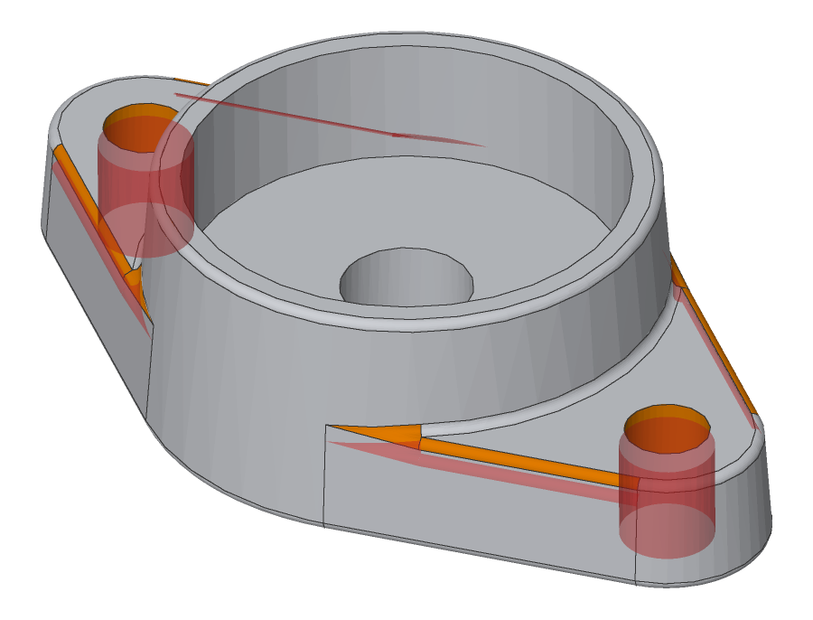
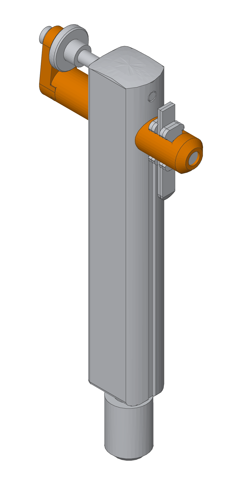

Compare two revisions in Draftwright, from your own viewer.
This page stands in for a CAD tool that already has two revisions of a part. Its button opens Draftwright's STEP diff and hands it the two files. They go from this page to that one inside the browser: nothing is uploaded, and the comparison runs there, in 3D, each change linked to its faces.
Cast bearing unit
gramil, an assembly of 12 parts
The button opens a new window: allow pop-ups for this page if your browser asks.
The code behind the button
All of it, from step-diff/HANDOFF.md. Each file is a Blob, File, ArrayBuffer or Uint8Array of a STEP file, or a gzipped one.
function compareInDraftwright(before, after) {
// before, after: { name: 'bracket.step', data: Blob | File | ArrayBuffer | Uint8Array }
const origin = 'https://editor.draftwright.io';
const diff = window.open(`${origin}/diff`);
addEventListener('message', function ready(e) {
if (e.source !== diff || e.origin !== origin || e.data?.type !== 'draftwright:diff-ready') return;
removeEventListener('message', ready);
diff.postMessage({ type: 'draftwright:diff', before, after }, origin);
});
}From a command line or a snapshot tool
The same comparison without a browser: specify-core diff, from the
release binaries (Linux, macOS, Windows).
It writes a report in plain words, a picture with the changes coloured, and the same as JSON.
specify-core diff before.step after.step --title part.step -o out
# out/report.md what changed, in engineering terms
# out/model.png the new part, changed faces orange, removed in red
# out/report.json the same, structured**What changed** (cast bearing unit, out/report.md)
- 4× R1 fillets, at (-32.2, -14.3, 10.7), (32.2, 14.3, 10.7), (-32.2, 14.3, 10.7) and (32.2, -14.3, 10.7): moved Z +2
- 2× Ø10 × 11 through holes, on the −Z side, at X 10.9, Y 28.4; X 87.4, Y 28.4 from the −X, −Y corner: depth 11 → 13; diameter 10 → 9
- 4× freeform surfaces: reshaped; moved Z +2✅ 2 parts changed (GRM-02 shaft, GRM-04 drive plate), 10 unchanged. (gramil, out/report.md)
| Part | Quantity | Change |
| GRM-02 shaft | 1 | ✅ changed |
| GRM-04 drive plate | 1 | ✅ changed |
